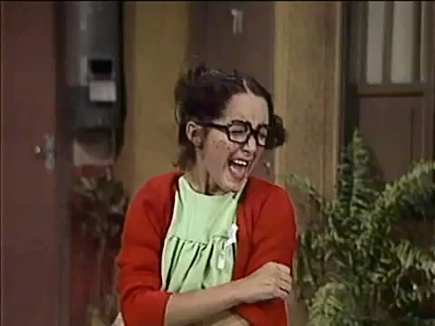

Chiquinha

Intérprete: Maria Antonieta de las Nieves
Dubladores: Sandra Mara Azevedo e Cecília Lemes.
Caracterização: Penteia-se com duas chiquinhas que nunca lhe caem direitas, e usa uma pequena franja também despenteada. É manhosa, chorona, baixinha, tem pintas no rosto e usa óculos.
Vestuário: Vestido curto, geralmente verde, com gola amarela. Usa um suéter vermelho que o põe com descuido, o arruma sempre cruzando por trás. Usa meias brancas dobradas até a canela e sapatos pretos.
Personalidade: É uma menina travessa, manipuladora, astuta, brincalhona, feminista, imperativa e muito inteligente (menos para o colégio). Morre de ciúmes do pai, o Seu Madruga, e não quer vê-lo com a Dona Clotilde e muito menos com o Paraíso, digo, o Céu, quer dizer, a Glória (a nova vizinha). Chiquinha é a “cabeça” dos planos dos meninos. Apaixonada pelo Chaves, fica com raiva e provoca qualquer outra menina que o Chaves se interesse, sobretudo a Paty, sobrinha de Glória.
Ganhou o apelido de Chiquinha (Chilindrina) por causas de suas sardas. Seu Madruga acha que ela parece com chiquinhas (chilindrinas), pães salpicados de açúcar, comuns no México.
A bisneta de Dona Neves chora fortíssimo (a gritos: ué, ué, ué) e faz um curioso movimento agachando-se e flexionando as pernas ao mesmo tempo em que cruza os braços; isto se repete ritmamente e logo seu choro vai ficando mais ameno e quando de novo quer voltar a falar, nada se entende. A Chiquinha tem o carisma de um líder e um brilho de uma estrela de cinema.
Bordões: “Pois é, pois é, pois é!”